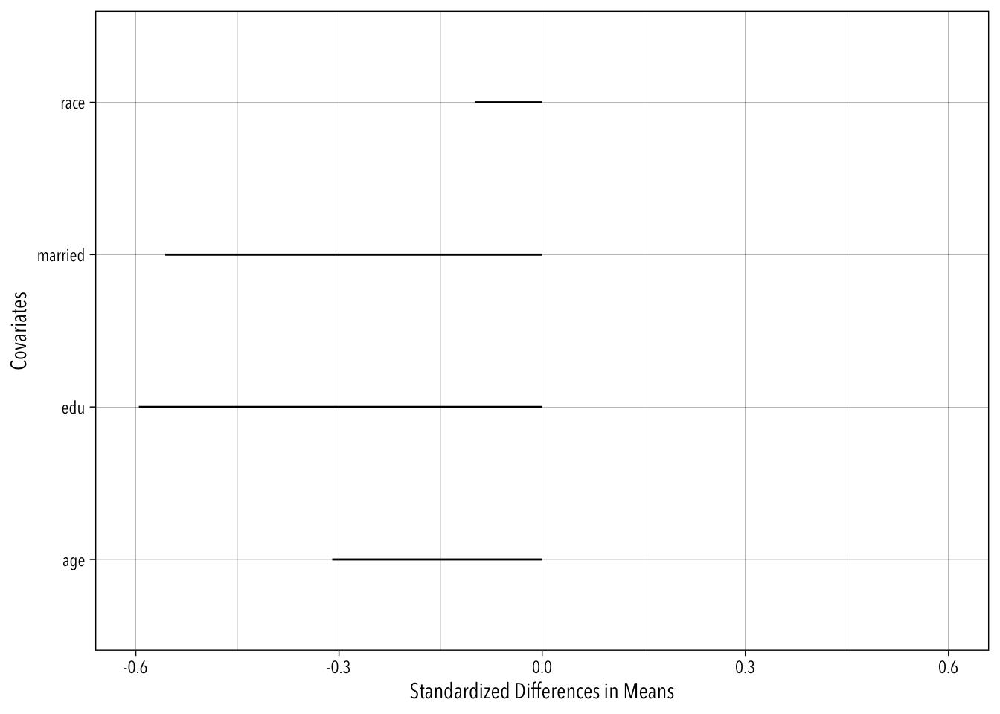

library(tidyverse)
library(broom)
library(DiagrammeR)
theme_set(theme_linedraw(base_family = "Avenir Next Condensed"))HW6_syQiu
Set-up
6.2 Balance and Overlap
6.2.1 Looking for imbalance
d <- haven::read_dta("cattaneo2.dta")
d <- d |>
haven::zap_labels() |>
select(bweight, lbweight, mbsmoke, mmarried, mage, medu, fbaby, alcohol, mrace, nprenatal)
glimpse(d)Rows: 4,642
Columns: 10
$ bweight <dbl> 3459, 3260, 3572, 2948, 2410, 3147, 3799, 3629, 2835, 3880, …
$ lbweight <dbl> 0, 0, 0, 0, 1, 0, 0, 0, 0, 0, 0, 0, 0, 0, 1, 0, 0, 0, 0, 0, …
$ mbsmoke <dbl> 0, 0, 0, 0, 0, 0, 0, 0, 0, 0, 1, 0, 0, 0, 0, 0, 0, 0, 0, 1, …
$ mmarried <dbl> 1, 0, 1, 1, 1, 0, 1, 1, 1, 1, 1, 0, 1, 1, 0, 1, 1, 1, 1, 0, …
$ mage <dbl> 24, 20, 22, 26, 20, 27, 27, 24, 21, 30, 26, 20, 34, 21, 23, …
$ medu <dbl> 14, 10, 9, 12, 12, 12, 12, 12, 12, 15, 12, 12, 14, 8, 12, 12…
$ fbaby <dbl> 0, 0, 0, 0, 1, 1, 0, 1, 1, 0, 1, 1, 0, 1, 1, 0, 0, 0, 0, 0, …
$ alcohol <dbl> 0, 0, 0, 0, 0, 0, 0, 0, 0, 0, 0, 0, 0, 0, 0, 0, 0, 0, 0, 0, …
$ mrace <dbl> 1, 0, 1, 1, 1, 1, 1, 1, 1, 1, 1, 0, 1, 1, 0, 1, 1, 1, 1, 0, …
$ nprenatal <dbl> 10, 6, 10, 10, 12, 9, 16, 11, 20, 9, 14, 5, 13, 8, 4, 10, 13…The first step is to determine what covariates are the most important to adjust for. This can be diagnosed using a DAG:
DiagrammeR::grViz("
digraph{
graph []
node [shape = plaintext]
T [label = 'Mother Smoking']
Y [label = 'Birthweight']
A [label = 'Marital Status']
B [label = 'Mother Age']
C [label = 'Mother Education']
D [label = 'First Baby']
E [label = 'Mother Drinking']
F [label = 'Mother Race']
G [label = 'Prenatal Care']
edge []
T -> Y
B -> T
B -> Y
B -> C
B -> G
B -> A
B -> D
A -> Y
D -> Y
C -> T
C -> Y
C -> G
C -> E
G -> T
G -> Y
E -> T
E -> Y
F -> Y
F -> T
F -> E
}
")Those demographic characteristics (age, race, marital status) are perhaps the most important covariates to adjust for. Social economic status like education also matters.
Then we replicate the balance plot for these variables mage , medu, mmarried, mrace. I will still use the standard deviations of the treated group here.
df_sd <- d |>
filter(mbsmoke == 1) |>
group_by(mbsmoke) |>
summarise(
age_sd = sd(mage),
edu_sd = sd(medu),
married_sd = sd(mmarried),
race_sd = sd(mrace)
) |>
pivot_longer(
cols = -mbsmoke,
names_to = "variable",
values_to = "value"
) |>
mutate(variable = str_replace(variable, "_sd", ""))
d |>
group_by(mbsmoke) |>
summarise(
age_mean = mean(mage),
edu_mean = mean(medu),
married_mean = mean(mmarried),
race_mean = mean(mrace)
) |>
pivot_longer(
cols = -mbsmoke,
names_to = "variable",
values_to = "value"
) |>
mutate(variable = str_replace(variable, "_mean", "")) |>
left_join(df_sd, by = "variable", suffix = c("_mean", "_sd")) |>
mutate(std_mean = value_mean/value_sd) |>
select(mbsmoke_mean, variable, std_mean) |>
group_by(variable) |>
summarise(smd = diff(std_mean)) |>
ggplot(aes(y = variable, x = smd)) +
geom_segment(aes(xend = 0, yend = variable)) +
xlab("Standardized Differences in Means") +
ylab("Covariates") +
xlim(c(-0.6, 0.6))
6.3 Matching
6.3.1 Exercise
Question c suggests that we need to weight the treated group to match the control group (not the same as what the authors did in section 14.2, where he weights the control group to match the treated group.
| Habit | Control | Control Weight | Treatment | Treated Weight | Weighted Number | Weighted proportion | Treatment Penmanship |
|---|---|---|---|---|---|---|---|
| left-handed | 10 | 1 | 6 | 10/6=1.67 | 6 * 1.67=10.02 | 10.02/100.22=10.0% | 7 |
| ambidextrous | 2 | 1 | 4 | 2/4=0.5 | 4 * 0.5 = 2 | 2/100.22=2.0% | 4 |
| right-handed | 88 | 1 | 90 | 88/90=0.98 | 90 * 0.98 = 88.2 | 88.2/100.22=88% | 6 |
| total | 100 | 100 | 100.22 |
Weights to control group (See above)
Weights to treated group (See above)
Weighted proportion of people (See above)
Weighted penmanships in the treated group = \(\frac{1.67 * 6 * 7 + 0.5 * 4 * 4 + 0.98 * 90 * 6}{100}=6.07\)
Therefore the weighted effect should be 6.07 - 5 = 1.07 improvement in penmanship.
The unweighted effect is 0.06 * 7 + 0.04 * 4 + 0.9 * 6 - 5 = 5.98 - 5 = 0.98 improvement in penmanship.
There are differences between weighted and unweighted effect because ambidextrous group with a relatively lower penmanship score is given a lower weight in the matching process, and the left-handed group with a relatively higher penmanship score is given a high weight.